02
Branding / Social
Selected work
02
Branding / Social
Selected work
Independent Creative Studio / Brazil
Design que transforma ideia em presença visual.
Identidades, campanhas e universos visuais desenvolvidos para marcas, artistas e projetos que não querem parecer comuns.
BRANDING✦ART DIRECTION✦SOCIAL MEDIA✦MOTION✦COVER ART✦
BRANDING✦ART DIRECTION✦SOCIAL MEDIA✦MOTION✦COVER ART✦
Selected Work / 2026
Projetos que constroem percepção.
Uma seleção de projetos em que conceito, direção de arte e execução trabalham como um único sistema visual.
 01
Music / Visual Identity
View case ↗
02
Branding / Social
Selected work
01
Music / Visual Identity
View case ↗
02
Branding / Social
Selected work
03
Food / Art Direction
A

Case soon
04
Brand / Social Presence
RM
Case soon
Manifesto
Não é só fazer bonito. É construir percepção.
Cada projeto nasce de uma ideia central. A partir dela, desenvolvo uma linguagem capaz de conectar conceito, estética e comunicação — da primeira impressão aos detalhes que fazem uma marca ser reconhecida.
What I do
Serviços
Do conceito à aplicação, cada entrega é pensada como parte de um sistema visual consistente.
Branding & Identidade Visual
Conceito, logo, sistema visual, tipografia, cores e aplicações.
Direção de Arte
Conceitos, campanhas e universos visuais para marcas e projetos criativos.
Social Media Design
Conteúdo pensado como sistema, não como uma coleção de posts desconectados.
Cover Art
Capas e identidades visuais para artistas, singles, álbuns e projetos musicais.
Motion Design
Movimento aplicado à identidade para ampliar impacto, ritmo e percepção.
Campanhas & Key Visuals
Conceitos visuais adaptáveis para diferentes formatos, mídias e pontos de contato.
About / Felpdesigner
Visual forte. Mensagem clara. Marca consistente.
Sou Felipe Araújo, designer e diretor visual por trás da Felpdesigner.
Meu trabalho parte da construção de conceitos para desenvolver identidades, campanhas e universos visuais com personalidade.
Trabalho principalmente com branding, direção de arte, social media, cover art e motion design, buscando transformar cada projeto em um sistema visual coerente — capaz de funcionar tanto em uma peça individual quanto em toda a comunicação de uma marca.
A Felpdesigner nasce dessa busca por imagens que não apenas chamem atenção, mas criem percepção, reconhecimento e presença.
01IdentityAssinatura principal
02RecognitionSímbolos complementares
03AtmospherePadrões, textura e movimento
Primary Mark
Secondary Element
#050505
#0D0D0D
#1C1C1C
#555555
#9A9A9A
#F2F2EF
#FFFFFF
01Concept firstIdeia antes do efeito.
02System thinkingPeças que funcionam juntas.
03Visual impactPresença sem excesso.
04Built to moveIdentidade pronta para motion.
Have a project?
Let's make it visual.
Se você tem uma marca, campanha ou projeto que precisa ganhar presença, me chama e a gente desenrola.
Falar no WhatsApp ↗